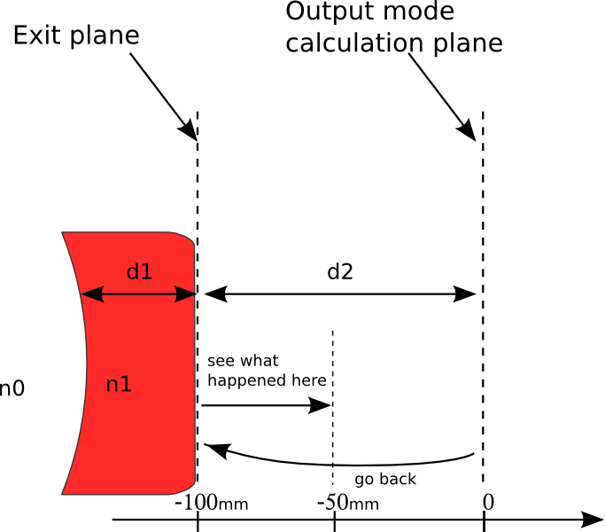

Tutorial 6 - A second ‘Bessel-Gauss’ cavity design¶
In the previous cavity design we used a divergent conical reflector which is equivalent to a negative refractive axicon, let’s tray now to use a positive axicon. Then we calculate the output beam by considering that the output coupler is the concave mirror and using the method explained in Tutorial 4 - Calculating the output beam, by assuming that the thickness of the output mirror d1 is 5mm for example, we take n1=1.5 the refractive index of the output mirror. The output plane where we want to see the beam is at a distance d2= 100mm from the output mirror second facet. But first let’s start with defining the cavity.
The new design scheme is shown bellow:

Creating the ABCD matrices and the cavity-subsystems just as in the previous tutorial:
In [1]: import opencavity.modesolver as oc
In [2]: from opencavity.propagators import FresnelProp
In [3]: import numpy as np #import numerical Python
In [4]: import matplotlib.pylab as plt # import matplotlib to plot figures
In [5]: R1=1e18; R2=250*1e3; Lc=78*1e3; npts=500; a=2000; # cavity parameters
In [6]: M1=np.array([[1,0 ],[-2/R1, 1]]); M2=np.array([[1, Lc],[0, 1]]); #plane mirror M1 & propagation distance Lc
In [7]: M3=np.array([[1, 0],[-2/R2, 1]]); M4=np.array([[1, Lc],[0, 1]]); #concave mirror M2 &propagation distance Lc
In [8]: M11=M2.dot(M1); M22=M4.dot(M3); # sub-system 1 & sub-system 2
In [9]: A11=M11[0,0]; B11=M11[0,1]; C11=M11[1,0]; D11=M11[1,1] # getting the members of subsystem 1 matrix
In [10]: A22=M22[0,0]; B22=M22[0,1]; C22=M22[1,0]; D22=M22[1,1] # getting the members of subsystem 2 matrix
In [11]: sys1=ms.CavEigenSys(wavelength=1.04); # working wavelength 1.04 micron
In [12]: sys2=ms.CavEigenSys(wavelength=1.04);
In [13]: sys1.build_1D_cav_ABCD(a,npts,A11,B11,C11,D11) #
In [14]: sys2.build_1D_cav_ABCD(a,npts,A22,B22,C22,D22) #
Creating the axicon function with positive base angle = +0.5°, sys.k is the wave vector, the only difference with the first example is the sign
of the base angle.
In [15]: theta=0.5*3.14/180;# reflector is quivalent to refractive axcicon with 2 x theta
In [16]: T_axicon=ms.np.exp((1j*sys1.k)*2*theta*(ms.np.sign(sys1.x1))*sys1.x1)
Applying the axicon function and solve and show the fundamental mode
In [17]: sys1.apply_mask1D(T_axicon)
Applying 1D Mask...
Mask applied.
In [18]: sys1.cascade_subsystem(sys2)
systems cascaded.
In [19]: sys1.solve_modes()
running the eigenvalues solver...
In [20]: sys1.show_mode(0,what='intensity')

The first thing we notice is that the ring radius of the beam is smaller. But the major difference is in the propagation. let’s calculate now the output beam at d2=10cm out of the cavity. The propagation system to calculate the output beam is shown bellow:

creating the propagation matrice, fetching the mode and propagate it. The ABCD matrix of such a optical system is:
Entering ABCD matrices
In [21]: import opencavity as oc
In [22]: from opencavity.propagators import FresnelProp
In [23]: import numpy as np #import numerical Python
In [24]: import matplotlib.pylab as plt # import matplotlib to plot figures
In [25]: R1=1e18; R2=250*1e3; Lc=78*1e3; npts=500; a=2000; # cavity parameters
In [26]: M00=np.array([[1,Lc ],[0, 1]]);
In [27]: M01=np.array([[1,0 ],[(1-1.5)/(-R2*1.5), 1/1.5]]);# -R2 (<0 because it is a concave interface)
In [28]: M02=np.array([[1,5e3 ],[0, 1]]);
In [29]: M03=np.array([[1,1 ],[0, 1.5/1]]);
In [30]: M04=np.array([[1,100e3 ],[0, 1]]);
In [31]: M_out=M04.dot(M03.dot(M02.dot(M01.dot(M00))));
Propagating the beam
In [32]: propsys2=FresnelProp() # create propagator object
In [33]: l,tem00=sys1.get_mode1D(0) # get the fundamental mode of the cavity
In [34]: propsys2.set_start_beam(tem00, sys1.x1) # set the beam to propagate
In [35]: propsys2.set_ABCD(M_out) # set the ABCD matrix
In [36]: propsys2.propagate1D_ABCD(x2=sys1.x1) # calculate the propagation
In [37]: propsys2.show_result_beam(what='intensity') # show propagation result

The beam radius remain almost unchanged!. To figure out how this beam propagates when he leaves the cavity we take the result of the propagation which is the beam at 100mm then we go back and propagate it from -100mm (just after the second mirror) to -50mm (See scheme bellow).
{kind=link}
In [38]: U,x=propsys2.get_result_beam() # get the beam resulting from last propagation
In [39]: propsys2.set_start_beam(U, x) # set this beam as a starting one
In [40]: propsys2.yz_prop_chart(-100e3,-50e3,100,0.5*sys1.x1) # propagate at several successive planes
In [41]: plt.set_cmap('hot') #change the colormap (see 'matplotlib' help)
In [42]: propsys2.show_prop_yz() # show the result
{kind=link}
Well its more clear now, the high intensity region is just at the output of the cavity.
The cleaned code¶
# -*- coding: utf-8 -*-
'''
@author: M.seghilani
'''
import opencavity.modesolver as ms
from opencavity.propagators import FresnelProp
import numpy as np #import numerical Python
R1=1e18; R2=250*1e3; Lc=78*1e3; npts=500; a=2000; # cavity parameters
M1=np.array([[1,0 ],[-2/R1, 1]]); #concave mirror M1
M2=np.array([[1, Lc],[0, 1]]); #propagation distance Lc
M3=np.array([[1, 0],[-2/R2, 1]]); #concave mirror M2
M4=np.array([[1, Lc],[0, 1]]); #propagation distance Lc
M=M4.dot(M3).dot(M2).dot(M1) # calculating the global matrix (note the inversed order)
M11=M2.dot(M1); M22=M4.dot(M3); # sub-system 2
A11=M11[0,0]; B11=M11[0,1]; C11=M11[1,0]; D11=M11[1,1] # getting the members of subsystem 1 matrix
A22=M22[0,0]; B22=M22[0,1]; C22=M22[1,0]; D22=M22[1,1] # getting the members of subsystem 2 matrix
sys1=ms.CavEigenSys(wavelength=1.04);
sys2=ms.CavEigenSys(wavelength=1.04);
sys1.build_1D_cav_ABCD(a,npts,A11,B11,C11,D11) #
sys2.build_1D_cav_ABCD(a,npts,A22,B22,C22,D22) #
theta=0.5*3.14/180;# reflector is quivalent to refractive axcicon with 2 x theta
T_axicon=ms.np.exp((+1j*sys1.k)*2*theta*(ms.np.sign(sys1.x1))*sys1.x1)
sys1.apply_mask1D(T_axicon)
sys1.cascade_subsystem(sys2)
sys1.solve_modes()
sys1.show_mode(0,what='intensity')
sys1.show_mode(0,what='phase')
l,tem00=sys1.get_mode1D(0)
print 1-np.abs(l)**2
# the output beam & propagation
M00=np.array([[1,Lc ],[0, 1]]);
M01=np.array([[1,0 ],[(1-1.5)/(-R2*1.5), 1/1.5]]);# -R2 (<0 because it is a concave interface)
M02=np.array([[1,5e3 ],[0, 1]]);
M03=np.array([[1,1 ],[0, 1.5/1]]);
M04=np.array([[1,100e3 ],[0, 1]]);
M_out=M04.dot(M03.dot(M02.dot(M01.dot(M00))));
propsys2=FresnelProp()
l,tem00=sys1.get_mode1D(0) # get the fundamental mode of the cavity
propsys2.set_start_beam(tem00, sys1.x1) # set the beam to propagate
propsys2.set_ABCD(M_out) # set the ABCD matrix
propsys2.propagate1D_ABCD(x2=sys1.x1) # calculate the propagation from initial plane to a plane 10 times larger (the beam is wider)
propsys2.show_result_beam(what='intensity') # show propagation result
U,x=propsys2.get_result_beam()
propsys2.set_start_beam(U, x)
propsys2.yz_prop_chart(-100e3,-50e3,100,0.5*sys1.x1)
propsys2.show_prop_yz()
ms.plt.show() # can be removed when using Ipython